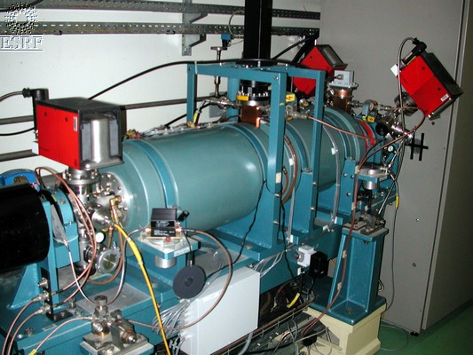

Linac Radio Frequency
Device Description
LinacRF Class
Revision: Release_1_1 - Author: bourtemb - CVS repository: ESRF
This class manages the Linac RadioFrequency.
The three structures of the linac (buncher - section 1 - section 2) consist of
coupled wave guide cavities, through which a high frequency electromagnetic wave
passes at the same speed than the electrons.
The electrons are adjusted to the peak of the RF wave,
they are then subjected to the maximum electrical field.
The phase of the section1 is the reference;
phases of the RF in pre-buncher, buncher and section 2 are matched to get the electrons
adjusted to the peak of the RF wave.

ESRF Linac Pre-buncher
ESRF - Software Engineering Group